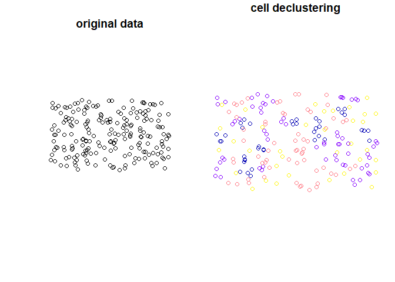

The goal of declusteringr is to declustering spatial data. This package offers support for the sf spatial objects.
Examples
Let’s start with reading the data:
library(sf)
#> Linking to GEOS 3.6.1, GDAL 2.2.3, PROJ 4.9.3
points4 = sf::st_read(system.file("points/punkty4.shp", package = "declusteringr"))
#> Reading layer `punkty4' from data source `C:\Users\Lenovo\Documents\R\win-library\3.6\declusteringr\points\punkty4.shp' using driver `ESRI Shapefile'
#> Simple feature collection with 200 features and 1 field
#> geometry type: POINT
#> dimension: XY
#> bbox: xmin: -1775590 ymin: -5316527 xmax: -1642585 ymax: -5237789
#> epsg (SRID): NA
#> proj4string: +proj=tmerc +lat_0=0 +lon_0=19 +k=0.9993 +x_0=500000 +y_0=-5300000 +ellps=GRS80 +units=m +no_defsCell declustering
This is a basic example of cell declustering:
library(declusteringr)
x = declstr_weighted(spatial_object = points4, cellsize = 10000)
x
#> Simple feature collection with 200 features and 3 fields
#> geometry type: POINT
#> dimension: XY
#> bbox: xmin: -1775590 ymin: -5316527 xmax: -1642585 ymax: -5237789
#> epsg (SRID): NA
#> proj4string: +proj=tmerc +lat_0=0 +lon_0=19 +k=0.9993 +x_0=500000 +y_0=-5300000 +ellps=GRS80 +units=m +no_defs
#> First 10 features:
#> id received_weights lengths geometry
#> 172 0 13.333333 1 POINT (-1652995 -5254057)
#> 121 1 3.333333 4 POINT (-1655337 -5267243)
#> 139 2 3.333333 4 POINT (-1711804 -5262422)
#> 3 3 6.666667 2 POINT (-1748079 -5310699)
#> 187 4 6.666667 2 POINT (-1724664 -5244599)
#> 140 5 3.333333 4 POINT (-1712603 -5260028)
#> 179 6 6.666667 2 POINT (-1748891 -5241387)
#> 99 7 3.333333 4 POINT (-1767435 -5271677)
#> 150 8 6.666667 2 POINT (-1670705 -5260691)
#> 41 9 4.444444 3 POINT (-1649904 -5302388)Plot input data and weighted points:
par(mfrow = c(1, 2))
plot(st_geometry(points4), main = "original data")
plot(x["received_weights"], main = "cell declustering",
key.pos = NULL, reset = FALSE)
declstr_weighted() is adding the following columns: received_weights
- the weight of each cell, and
lengths- a number of points in cell.declstr_weighted()does not change the number of features. Weights are calculated according to the equation:

, where ni is the number of samples in the cell in which sample j is located and n is the total number cells with samples.
Random declustering
This is basic example of random declustering:
y = declstr_random(spatial_object = points4, cellsize = 10000, numpoint = 2)
y
#> Simple feature collection with 159 features and 1 field
#> geometry type: POINT
#> dimension: XY
#> bbox: xmin: -1775590 ymin: -5316527 xmax: -1642585 ymax: -5237910
#> epsg (SRID): NA
#> proj4string: +proj=tmerc +lat_0=0 +lon_0=19 +k=0.9993 +x_0=500000 +y_0=-5300000 +ellps=GRS80 +units=m +no_defs
#> First 10 features:
#> id geometry
#> 50 49 POINT (-1757793 -5311478)
#> 68 67 POINT (-1764673 -5310663)
#> 4 3 POINT (-1748079 -5310699)
#> 177 176 POINT (-1748461 -5307808)
#> 56 55 POINT (-1745143 -5315420)
#> 64 63 POINT (-1733773 -5308707)
#> 16 15 POINT (-1725205 -5311317)
#> 59 58 POINT (-1705916 -5313721)
#> 28 27 POINT (-1708887 -5310775)
#> 184 183 POINT (-1704856 -5313243)Plot input data and data after random declustering:
par(mfrow = c(1, 2))
plot(st_geometry(points4), main = "original data")
plot(y, main = "random declustering",
key.pos = NULL, reset = FALSE)declstr_random() is choosing random features by specifying some parameters. declstr_random() can change the number of features.
References
- Declustering and Debiasing - M. J. Pyrcz (mpyrcz@ualberta.ca) and C. V. Deutsch (cdeutsch@ualberta.ca), Centre for Computational Geostatistics University of Alberta, Edmonton, Alberta, CANADA
- Cell Declustering Parameter Selection - C. V. Deutsch
- Nowosad, J., (2019). Geostatystyka w R. Poznań: Space A. ISBN 978-83-953296-0-9. Online: https://bookdown.org/nowosad/Geostatystyka/
- Nowosad, J., (2019). Elementarz programisty: wstęp do programowania używając R. Poznań: Space A. Online: https://nowosad.github.io/elp/
- Lovelace, Robin & Nowosad, Jakub & Muenchow, Jannes. (2019). Geocomputation with R. 10.1201/9780203730058.
- R Packages, H. Wickham, J. Bryan. Online: https://r-pkgs.org/ (2015)